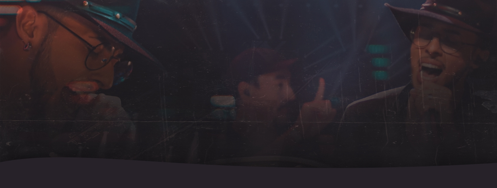

Cantor, músico, compositor e produtor audiovisual, iniciou sua
carreira aos 13 anos de idade ao lado de seu irmão Diego Matos, nas
noites de São Paulo. Depois de muitos anos de estrada, passando por
duas formações de dupla, hoje aos 27 anos Gabriel Matos percorre
fazendo shows por todo o estado em carreira solo, com apenas um foco:
Despertar e transmitir emoções por onde passa através da música. E se
prepara, 2022 vem muita coisa boa por aí!
Aguardem...